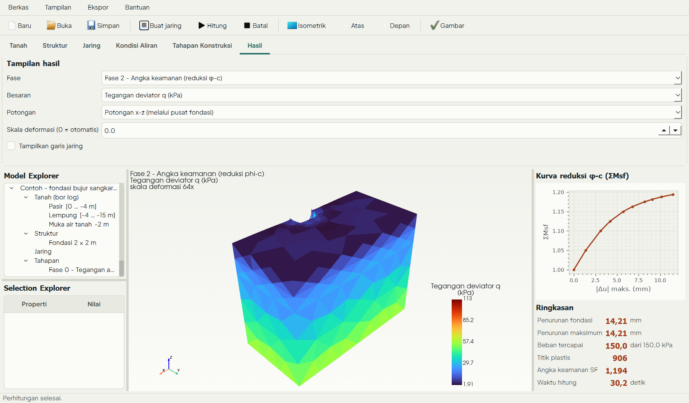

GeoFEM 3D
Analisis elemen hingga 3D untuk pondasi telapak di tanah berlapis: penurunan, tegangan, titik plastis, dan angka keamanan. Hitungan berjalan langsung di browser ini memakai solver Python yang sama dengan aplikasi desktopnya; data tidak dikirim ke mana pun.
- Jenis
- Kalkulator elemen hingga
- Topik
- Fondasi
- Metode
- FEM 3D, Mohr-Coulomb dan Hardening Soil
Hasil
Log hitungan
Aplikasi desktop
Versi desktop Windows punya jaring gmsh yang lebih rapat, potongan penampang, ekspor CSV, dan skrip pembanding dengan PLAXIS 3D. Tidak perlu memasang Python.
Unduh untuk Windows (.zip) Lihat kode di GitHub

Yang dihitung
| Bagian | Isi |
|---|---|
| Tanah | Lapisan horizontal dari bor log, terdrainase. Model Mohr-Coulomb atau Hardening Soil (pengerasan geser), muka air tanah hidrostatis. |
| Struktur | Pondasi persegi panjang di permukaan, fleksibel (tekanan merata) atau kaku (penurunan seragam). |
| Jaring | Tetrahedron 10 titik nodal, halus di bawah pondasi; seperempat model dengan dua bidang simetri. Di browser jaringnya terstruktur (garis grid jatuh di tepi pondasi, batas lapisan, dan muka air); versi desktop memakai gmsh. |
| Tahapan | Fase 0 tegangan awal (K0 = 1 − sin φ), fase 1 beban plastis inkremental-iteratif, fase 2 angka keamanan dengan reduksi φ-c. |
| Hasil | Perpindahan, tegangan efektif, p', q, titik plastis, potongan penampang, kurva beban-penurunan dan ΣMsf; di desktop juga potongan penampang serta ekspor PNG dan CSV. |
Cara memakai
- Isi lapisan tanah, pondasi, muka air tanah, dan kerapatan jaring di formulir di atas, atau tekan Muat data contoh.
- Tekan Hitung. Kunjungan pertama memuat Python ±35 MB; hitungan berikutnya langsung jalan.
- Pilih fase dan besaran untuk mewarnai model 3D. Seret untuk memutar, gulir untuk memperbesar.
- Hasil jaring kasar adalah perkiraan. Ulangi dengan jaring sedang; bila angkanya berubah banyak, pakai jaring yang lebih rapat atau aplikasi desktop.
Pemeriksaan
Sembilan uji otomatis ikut di repo: patch test elastis, penurunan lapisan elastis dibanding rumus tertutup, titik leleh satu elemen Mohr-Coulomb, uji triaksial Hardening Soil (modulus sekan pada 50 % qf sama dengan E50, kekuatan puncak sama dengan qf, kekakuan sebanding akar tegangan sel), dan pemetaan material ke PLAXIS.
Di browser, contoh bawaan dengan jaring kasar memberi penurunan 13,90 mm dan SF 1,29; jaring sedang 14,49 mm dan SF 1,16; aplikasi desktop dengan jaring gmsh 14,21 mm dan SF 1,19. Angka di browser dan di desktop berasal dari kode solver yang sama.
Repo juga berisi skrip pembanding dengan PLAXIS 3D yang memakai Python Remote Scripting resmi PLAXIS. Perbandingan itu belum dijalankan, jadi belum ada angka selisih yang bisa dilaporkan di sini.
Batasan
- Hanya analisis terdrainase; belum ada konsolidasi, aliran, atau tekanan pori ekses.
- Hardening Soil belum punya cap (pengerasan volumetrik), jadi Eoedref belum dipakai dan kompresi satu dimensi primer terlalu kaku.
- Satu pondasi persegi panjang di tengah domain, lapisan horizontal, tanpa elemen struktur.
- Hasil tergantung kerapatan jaring; periksa dengan memperhalus jaring sampai hasil stabil.
Sumber
- Schanz, T., Vermeer, P. A., & Bonnier, P. G. (1999). The hardening soil model: formulation and verification. Beyond 2000 in Computational Geotechnics. Balkema. Belum dibaca langsung.
- de Souza Neto, E. A., Perić, D., & Owen, D. R. J. (2008). Computational Methods for Plasticity. Wiley, bab 8 (return mapping Mohr-Coulomb).
- Griffiths, D. V., & Lane, P. A. (1999). Slope stability analysis by finite elements. Géotechnique, 49(3), 387–403 (reduksi kekuatan).
- Jâky, J. (1944). The coefficient of earth pressure at rest. Journal of the Society of Hungarian Architects and Engineers, 355–358.
Status sumber: Belum terverifikasidicek 17 November 2026arti status
Rumus belum dicocokkan langsung dengan sumber asli dan belum ada uji contoh soal buku.